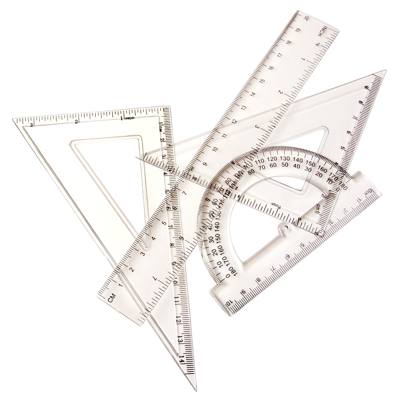
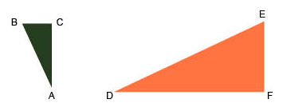
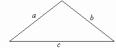

Geometry
Introduction

The word geometry originates from the greek language and means earth measurement.
To make measurements as precise as possible, good tools are required.
A good compass, a sharp pen, a long ruler, a set square and a goniometer.
A compass is used for drawing circles and sectors of circles. Another important feature of a compass is used for measuring distances.
Similar and congruent geometric objects

Similar shaped objects has the same form, but does not have to be the same size. The relation between equal sides are constant.
The two triangles are similar shaped and this is written:
ABC~DEF
The perimeter
The perimeter of a triangle is given by the sum of all it's sides. Given a triangle with the sides a, b and c, the perimeter P is given by the formula:
P = a + b + c
